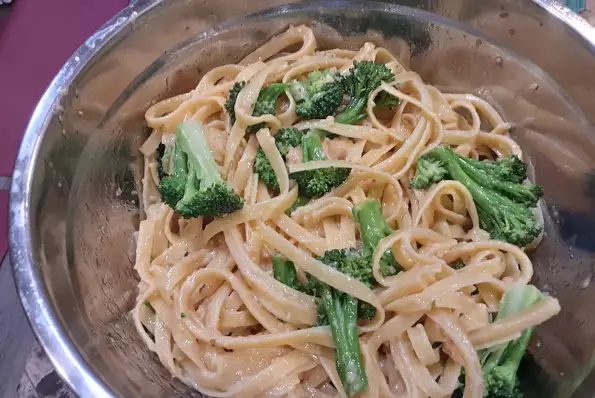

Fettuccini Alfredo

Ingriedients
- 10 ounces Fettuccini pasta
- 1/2 cup butter
- 5 cloves garlic, chopped
- 1 cup heavy cream
- 1 egg yolk
- 2 cups freshly grated Parmesan cheese
- 2 tbsp dried parsly
Steps
- Bring a large pot of lightly salted water to a boil. Add pasta and cook for 8 to 10 minutes or until al dente; drain.
- Pour about a 1/4 cup of heavy cream into a small bowl. Add egg yolk and beat together; set aside.
-
Pour remaining cream into the skillet. Increase heat to medium-high. As cream starts to boil, mix rapidly using a whisk.
Add egg mixture slowly to prevent curdling, whisking until well blended. Stir in 1 cup Parmesan cheese until combined.
- Add remaining Parmesan cheese and parsley; mix until smooth. Remove from heat and serve over cooked pasta.